Åtta versioner av samma sida, från den första kvällen 25 oktober till i dag. Välj ett datum för att se hur den såg ut då.
Bilderna togs 18 november. Varje version startades ur git-historiken i demoläget, med samma påhittade person, så det är den gamla koden som körs och inte gamla skärmbilder. Den första versionen fanns innan git och kommer från en sparad kopia.
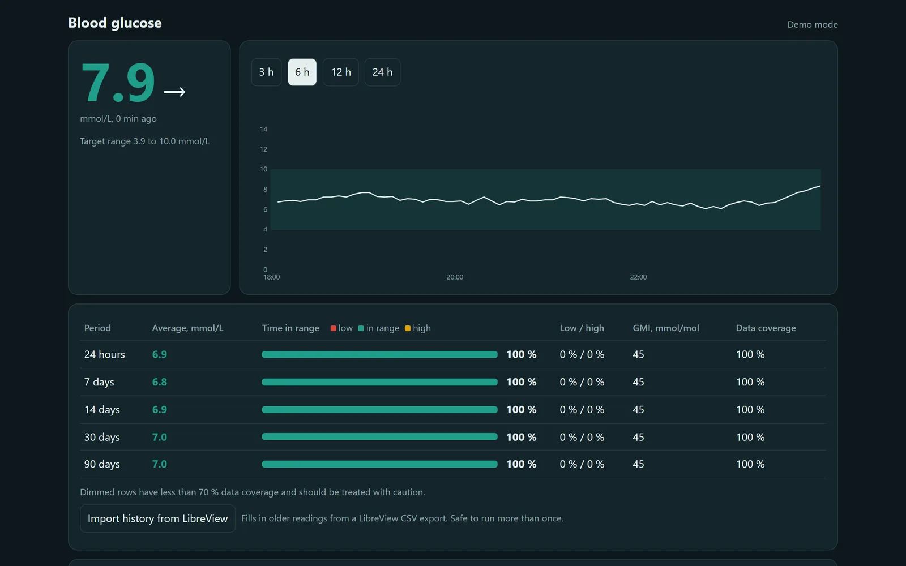
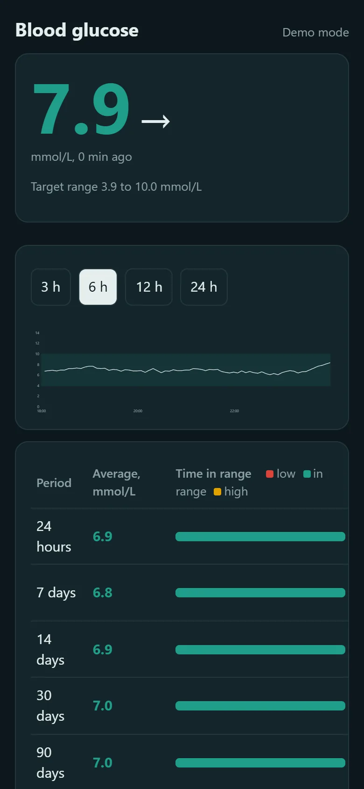
Gjord samma dag, innan Claude Code tog över på kvällen. Värdet, en kurva och en tabell med tid i målområdet för 24 timmar till 90 dagar, och import av historik från LibreView. Ingen logg för måltider syns i demoläget än.
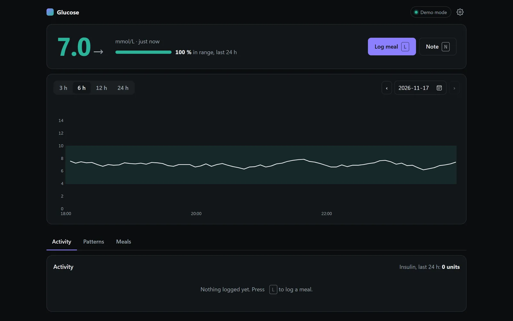
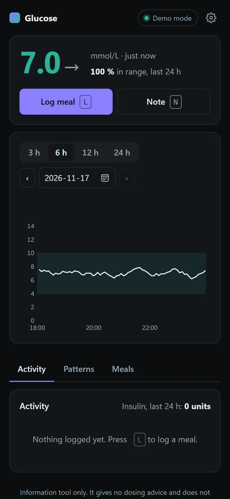
Knappar för måltid och anteckning med tangentbordsgenvägar, och flikarna Activity, Patterns och Meals under kurvan. Kurvan är fortfarande en vit linje i ett grönt band.
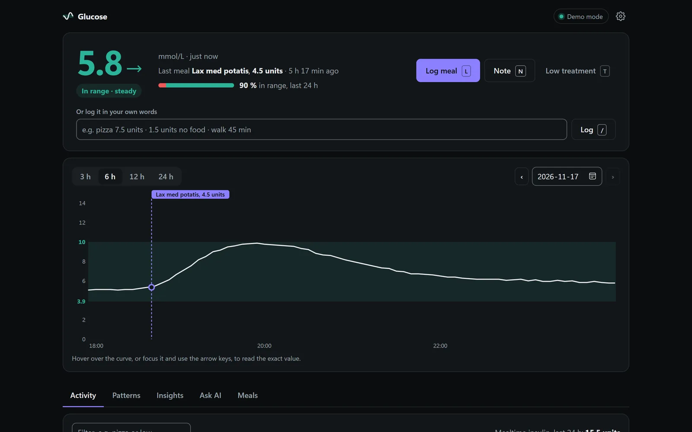
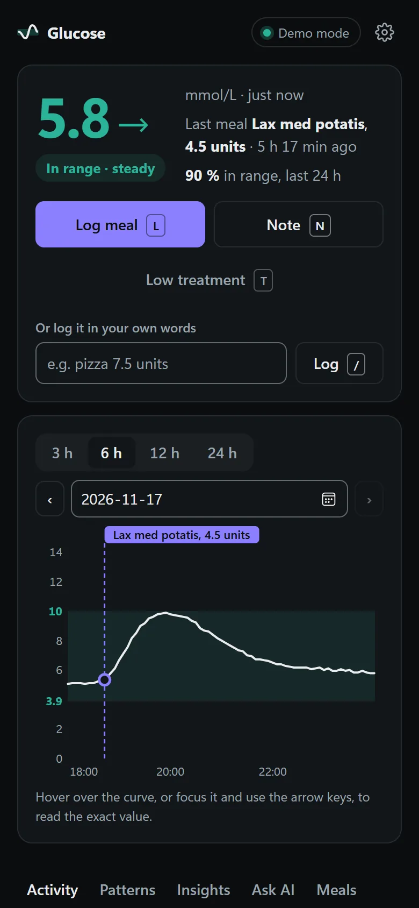
Läget i ord (In range · steady), den senaste måltiden, en knapp för behandlad känning och en ruta för att logga med egna ord. Måltiden markeras i kurvan, och flikarna Insights och Ask AI har tillkommit.
In range · steady
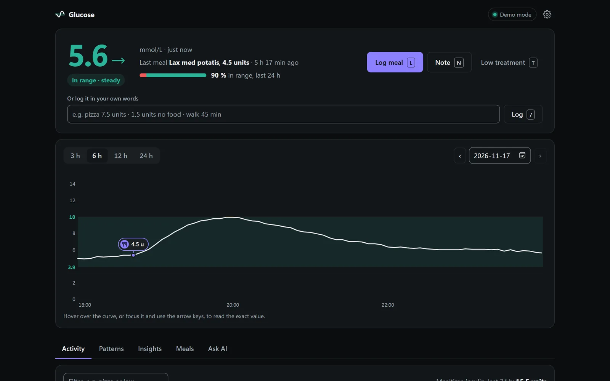
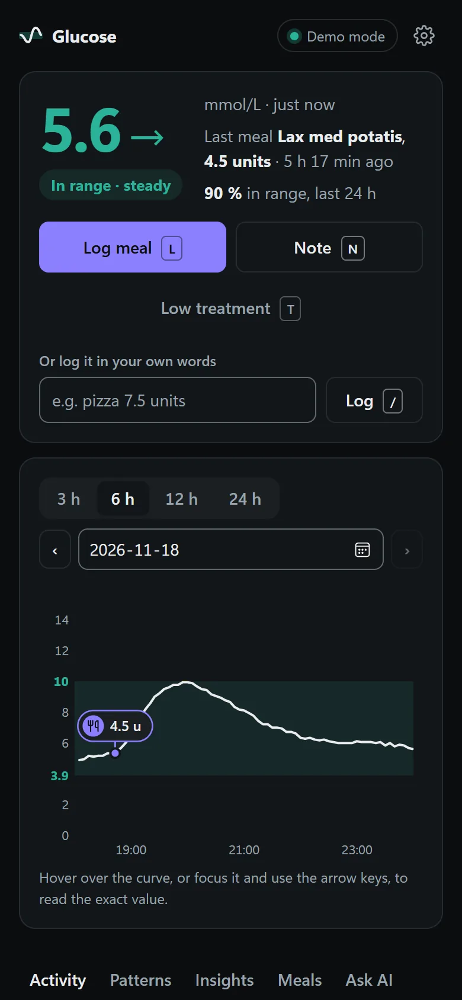
Mat och dos visas som en liten symbol i kurvan i stället för en lång etikett.
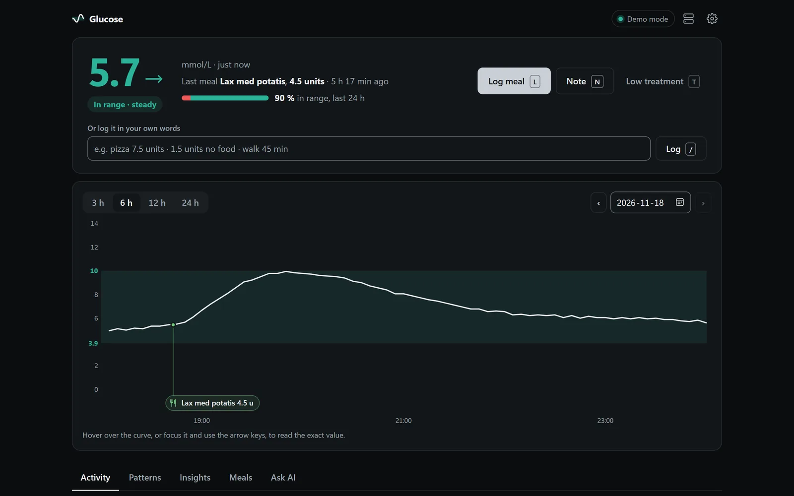
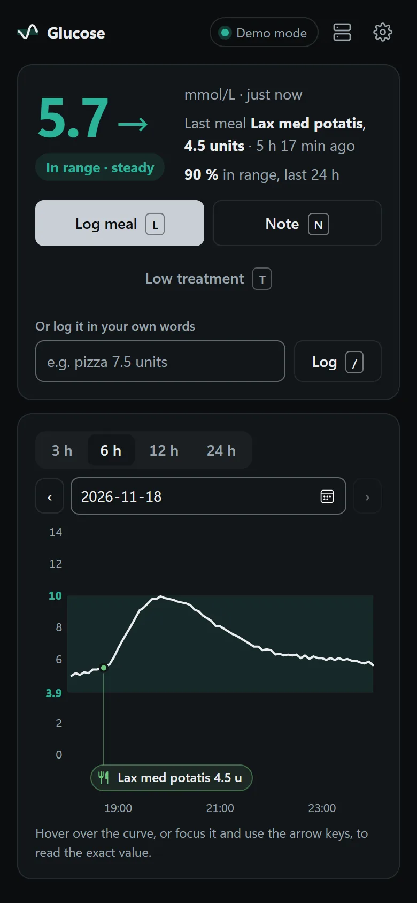
Knapparna blev gråa i stället för lila, så att färg bara betyder något om blodsockret. En ikon öppnar statussidan för Raspberry Pi:n, och måltiden står under kurvan.
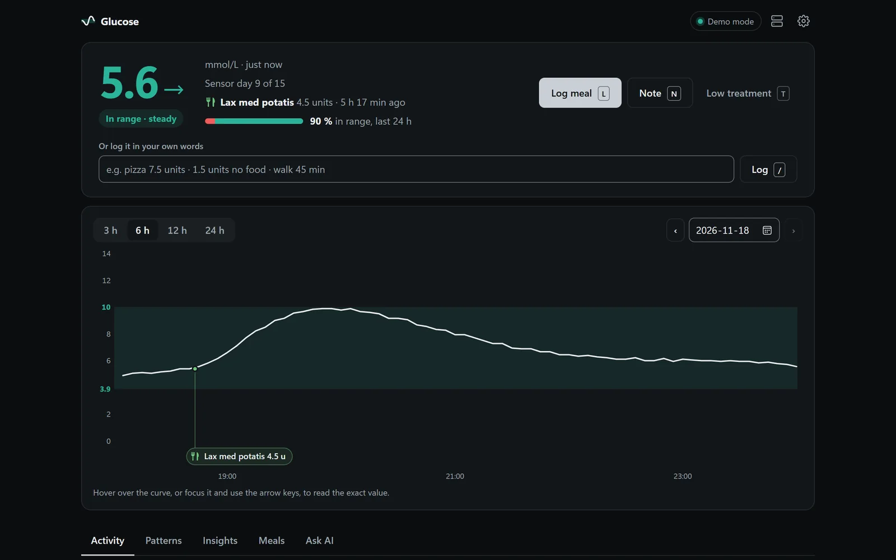
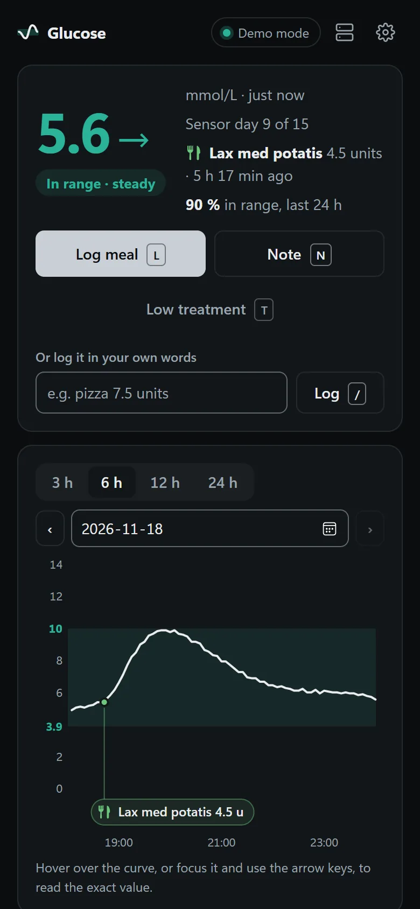
Sensor day 9 of 15 under värdet, och den senaste måltiden har samma symbol som i kurvan.
Sensor day 9 of 15
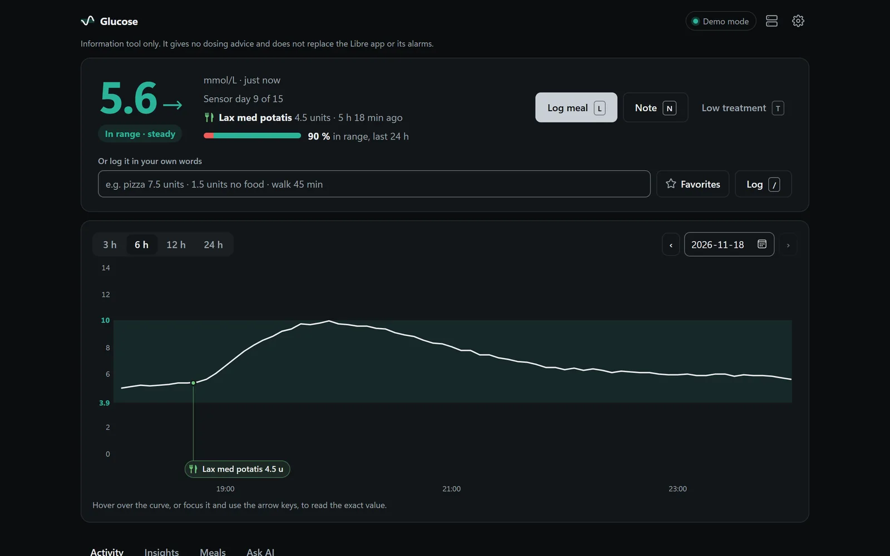
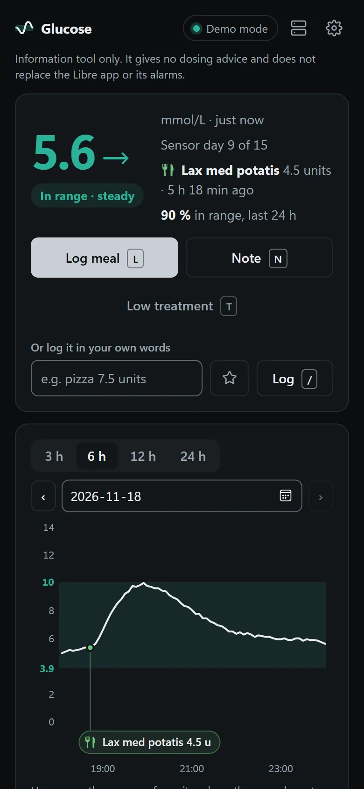
En rad överst om att appen inte ger dosråd, Favorites bredvid textfältet, och fliken Patterns borta: innehållet delades upp mellan Insights och Meals.
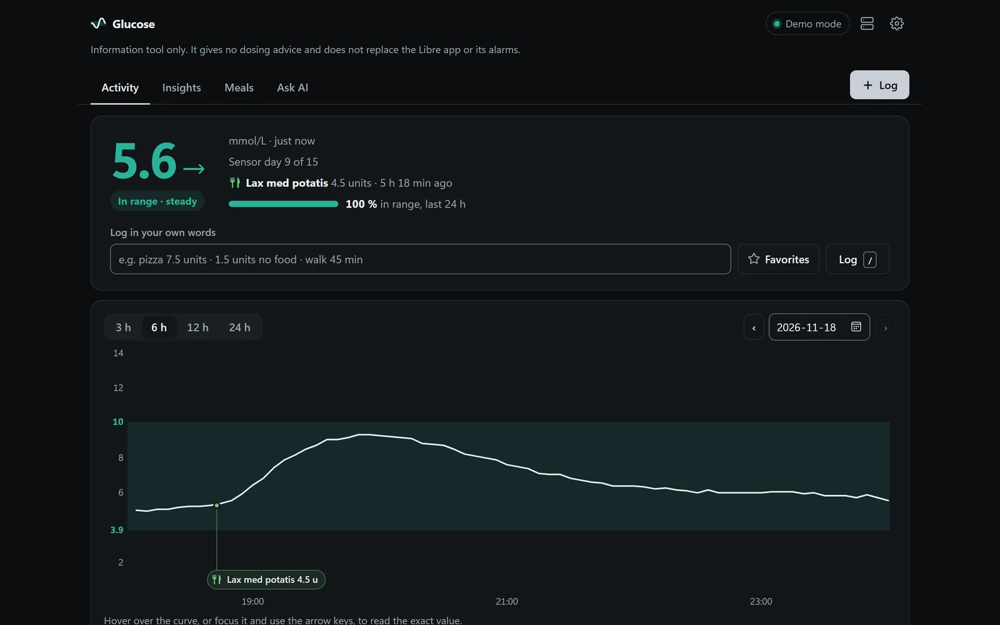
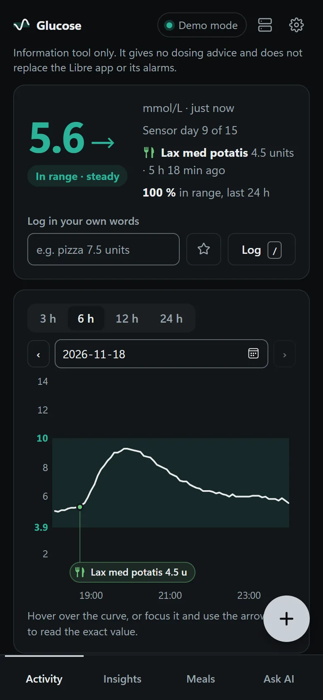
Flikarna flyttade upp, med en Log-knapp som alltid finns. Knapparna för måltid och anteckning i rutan med värdet behövdes inte längre.